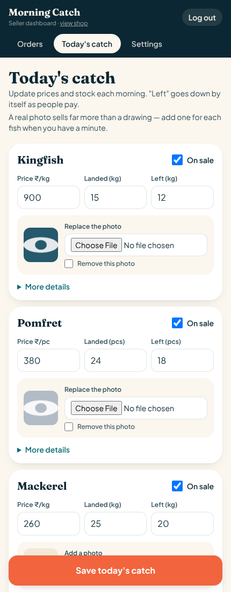

Working preview
The fish pre-booking site, running live with the new policy pages and the seller details pulled from config. Everything here is clickable — book a fish and take it all the way to the receipt.
Razorpay will not activate a live account without these five. Each one reads the seller's name, address and contact details from the same config block, so correcting one detail fixes all of them.
The admin dashboard runs on PHP and a database, so it can't be hosted here. This is it on a phone, with the new photo upload on each fish — the camera button, the thumbnail once a photo is in, and the tick to remove one.

.jpg is refused.
On the real site the shop runs on its own web address, takes live payments through Razorpay, and the seller updates the catch from their phone each morning. This preview is the same site with the payment step and the database switched off, so anyone can click through it safely.